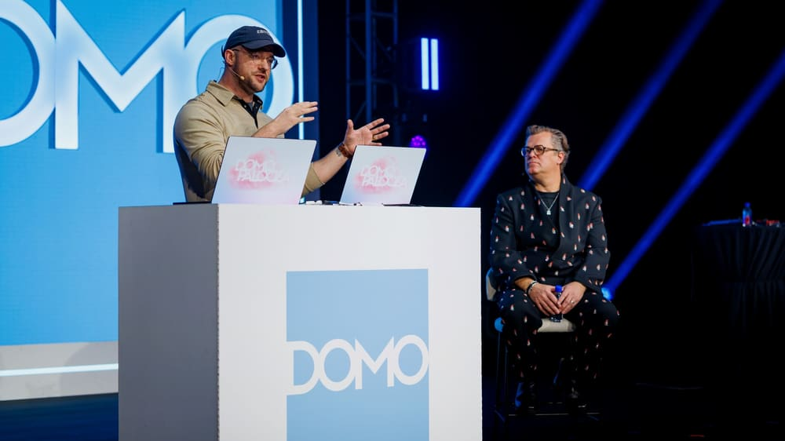

Proof
A keynote build, a pipeline audit, and a podcast on governed agents.

with William West Domo · Domopalooza 2026 · 31 Mar
Building five agents live, on the mainstage
Domo put a live, unrehearsed build inside its CEO keynote. I wired five agents to governed enterprise data with Claude Code, on stage with Josh James, fixing and extending a running Domo instance in front of the company's largest audience of the year.
A pipeline that fails is easy to notice. One that keeps running while producing wrong numbers can go unnoticed for months, which makes it the more expensive problem to have.
The ask on stage went to the harder version: "look through every single ETL, find the ones that have issues, not just the ones that are broken." Misspellings in filters, empty columns, bad CASE statements, joins that look suspicious.
In a 2018–2020 HMDA mortgage dataflow, a purchaser_type CASE had eleven
WHEN clauses that all tested the same value. Only the first branch could fire.
Fannie Mae, Ginnie Mae, Freddie Mac: dead code, every row labelled "Not applicable."
The more interesting one was a single typo: Prinicial residence where the data said
Principal residence. Every downstream filter looking for "Principal"
returned zero rows, and nothing anywhere threw an error. Plus eight CASE statements
with no ELSE,
turning unmatched values into NULL.
Then the follow-up prompt, typed live: "how many of these can you fix for me right now, my job depends on it." Five dataflows repaired and saved in front of the room: purchaser codes corrected, the typo fixed, ELSE clauses added, join keys aligned, NULLIF guards put around three divisions. 25 fixes across 5 ETLs, zero errors.
None of that came down to model capability. It came down to governance, API access, and knowing which kinds of failure stay hidden.

From Dashboards to Digital Operators: Building Agentic AI Apps on the Domo Platform
Building a human-resources agentic application live with Domo CMO Mark Boothe: human-in-the-loop workflows, role-level security, and pro-code App Studio builds. 28 Jul 202639 min
Listen on Spotify
If this is the shape of the problem you have, I'd like to hear about it.
Start a conversation